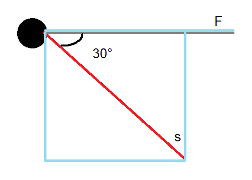

Work and energy are two new important units we'll be learning about in this course.
If a force moves an object, we have work. Work is simply the product of that force (F) and the distance (Δx). The distance is also known here as the displacement (s) of an object. We thus have a new formula for work (W).$$W=Fs$$This new formula is not perfect yet, because there are actually two types of work in physics; positive and negative work. Positive work is work where the motion of the object (that causes displacement) is in the same direction as the force. Negative work is work where these two face the opposite direction. An example of positive work is you pushing a trolley, because your force is directioned in the same way as the movement of the trolley. An example of negative work is a car braking. When the car brakes, a braking force is applied, the direction of which faces the back of the car. But at this point, the car is still moving forward, so these directions are opposite and there is negative work.
For negative work, we simply make our formula negative.
| Name | Unit | Symbol |
|---|---|---|
| Displacement (s) | Meters | m |
| Work (W) | Joules | J |
Additionally, it is possible that the direction of your force and your displacement is not exactly the same.
In this image, the gray line shows the force vector, and the red line shows the displacement vector. They are not aligned in the same direction. I have also drawn blue lines to indicate the displacement vector's normal and tangent. The normal is what we want to use in our formula, so it'd be W=F*s(n). How do we replace this s(n) back to s? You may recognize a right triangle here, where the top-right part of the blue rectangle is our 90°. This means that the cosine of that 30° corner, let's call it theta (θ) goes like this:$$cos(θ)=\frac{s_{n}}{s}$$We can re-arrange the terms and get a new formula for work, taking the angle into account:$$W=F·s·cos(θ)$$As a test, let's say we do have a regular example where the angle between the force vector and the displacement vector is thus 0°. The cosine of 0 degrees is equal to 1, so we would indeed end up with our old formula.
You may have noticed that Work uses the same unit (J) as energy, which I assume you've seen before. That's because Work is equal to one form of energy, namely a change in kinetic energy. Kinetic energy is one of the many forms energy can come in. Energy is an important property of any object that lets it do work. We will discuss different types of energy in the next course. The work-energy theorem says the following.$$W=\Delta E_{k}$$Where the 'k' in subscript stands for 'kinetic'.
| Name | Unit | Symbol |
|---|---|---|
| Energy (E) | Joules | J |